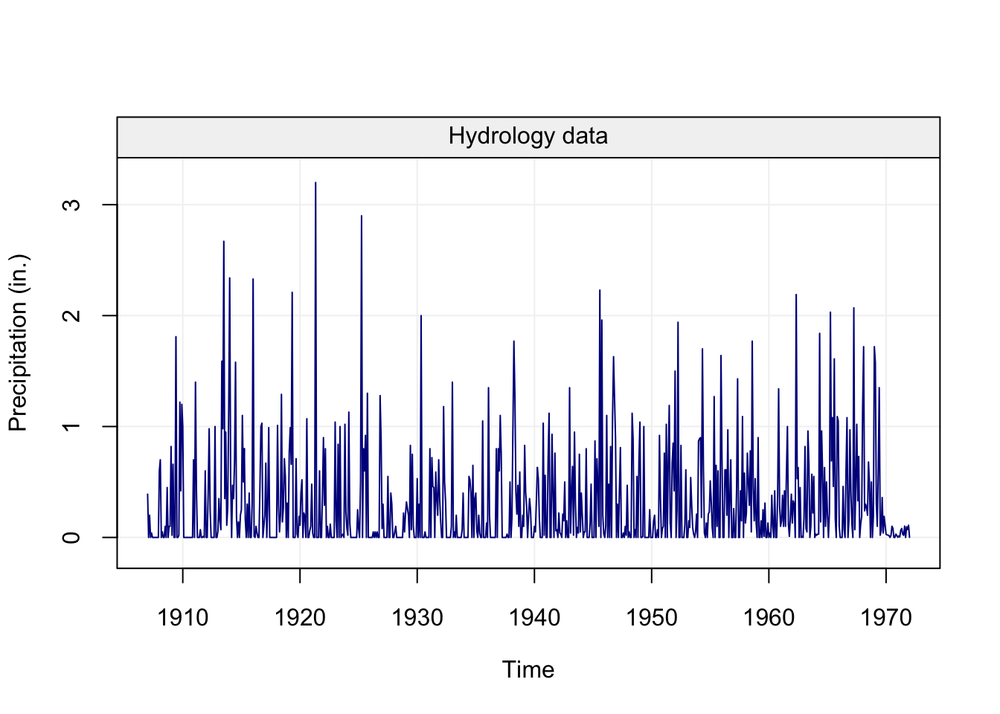

This repository holds the Time Series Simulation (simts) R package.
Below are examples of the capabilities of the simts package.
We can generate different types of time series data:
library(smacdata)
data("hydro")
hydro = gts(as.vector(hydro), start = 1907, freq = 12, unit_ts = "in.",
name_ts = "Precipitation", data_name = "Hydrology data")
plot(hydro)
data("savingrt")
savingrt = gts(as.vector(savingrt), start = 1959, freq = 12, unit_ts = "%",
name_ts = "Saving Rates", data_name = "US Personal Saving Rates")
plot(savingrt)
Install Instructions
To install the simts package, there is currently one option: GitHub (Developmental).
Recommended R Interface
We firmly recommend that any users of this package use the RStudio IDE over the default R GUI.
Installing the package through GitHub (Developmental)
For users who are interested in having the latest and greatest developments withing wavelets or simts methodology, this option is ideal. Though, there is considerably more work that a user must do to have a stable version of the package. The setup to obtain the development version is platform dependent.
Specifically, one must have a compiler installed on your system that is compatible with R.
For help on obtaining a compiler consult:
Depending on your operating system, further requirements exist such as:
OS X
Some user report the need to use X11 to suppress shared library errors. To install X11, visit xquartz.org
Linux
Both curl and libxml are required.
For Debian systems, enter the following in terminal:
sudo apt-get install curl libcurl3 libcurl3-dev libxml2 libxml2-devFor RHEL systems, enter the following in terminal:
sudo yum install curl curl-devel libxml2 libxml2-devAll Systems
With the system dependency taken care of, we continue on by installing the R specific package dependencies and finally the package itself by doing the following in an R session:
# Install dependencies
install.packages(c("RcppArmadillo","ggplot2","reshape2","devtools","knitr","rmarkdown"))
# Install the package from GitHub without Vignettes/User Guides
devtools::install_github("SMAC-Group/simts")Supplementary data package
To test the package performance on real-world data that is stationary or work with some of the examples, you will need to download and install the imudata and/or the datapkg R package.
To do so, please use the following installation method within the simts R package:
# Install the imudata package containing real world IMU data sets
simts::install_imudata()
# Install the datapkg package containing miscellaneous data sets
simts::install_datapkg()For more information about the imudata and datapkg package, see the https://github.com/SMAC-Group/imudata and https://github.com/SMAC-Group/datapkg.